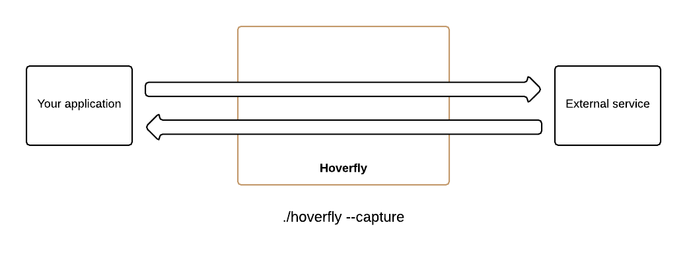
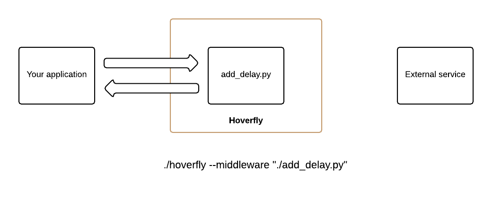
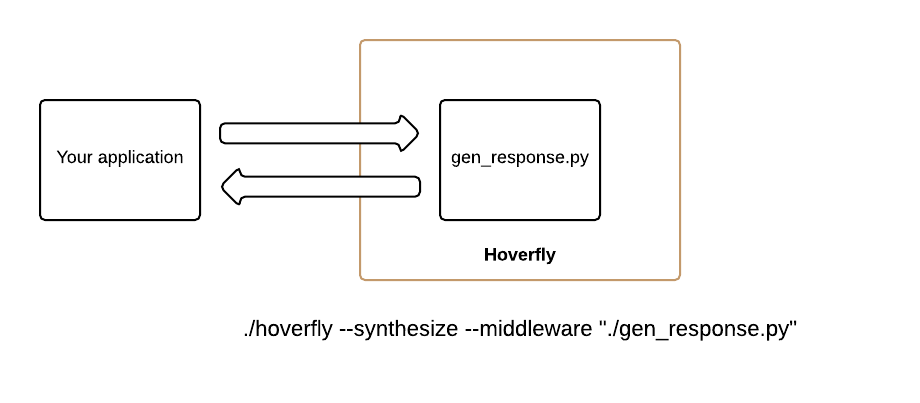
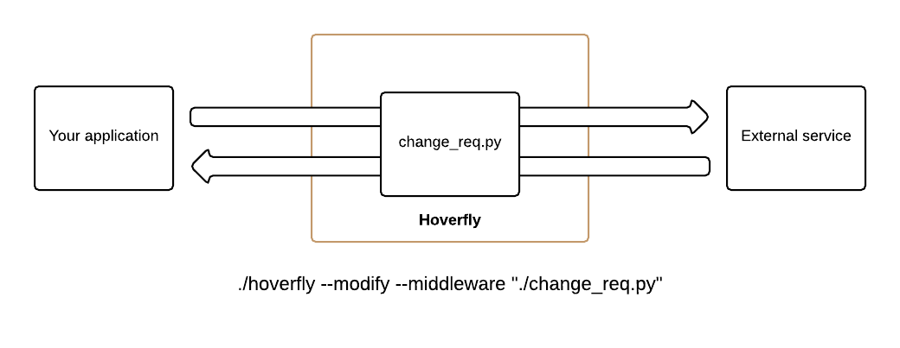

Service virtualization for the rest of us
Hoverfly is a lightweight, open source service virtualization tool. Using Hoverfly, you can virtualize your application dependencies to create a self-contained development or test environment.
Hoverfly is a proxy written in Go. It can capture HTTP(s) traffic between an application under test and external services, and then replace the external services. It can also generate synthetic responses on the fly.
Customize and extend using any language
Hoverfly can simulate real-world behavior - such as network latency, timeouts or rate limits - using middleware modules. Middleware modules can be written in any language, so you can use whatever you're comfortable with: Python, Ruby, PHP or even shell scripts. From adding a simple delay to a response, to implementing complex logic that transforms responses, the possibilities are literally endless.
Build synthetic services
Imagine a scenario where another team is working on a service but they haven't yet published it. Your software relies on this service. Now you can simply create a snippet in your favourite language with basic rules which define what to return on each request. Hoverfly will then synthesize this service for you. Think of it as super-charged mocking.
Modify traffic on the fly
Hoverfly allows you to use middleware to modify requests and responses on the fly. This means you can change any part of a request or response in real time without having to describe a service or store requests and responses.
